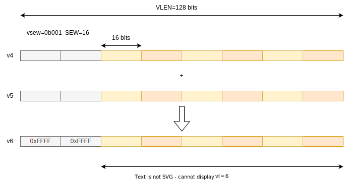

11th May 2025
This is a simple and quick intro to the RISC-V vector extension. Read to The End for a fun visualisation.
There are 32 vector registers. v0 is special in that it
can optionally be used as a mask register. Each register is
VLEN bits wide.
VLEN is an implementation-defined constant value that
can’t be changed at runtime. It must be a power of 2, and must be no
greater than 65536. A typical value might be 128 or 512 bits.
There is a read-only constant CSR vlenb that contains
VLEN in bytes (i.e. VLEN/8).
Vector operations operate on elements, i.e. single numbers. The way vector registers can be grouped and divided into elements is really flexible.
The maximum element width in bits is ELEN. Like
VLEN, ELEN is implementation-defined and
constant. It must be a power of 2, and VLEN ≥ ELEN ≥ 8. So
you are guaranteed to be able to operate on bytes, and you can’t have an
element that is bigger than a register. The maximum ELEN is
64, and in practice ELEN is probably 64.
The Selected Element Width is SEW (with
SEW ≤ ELEN). This can be varied at runtime. There
is a CSR called vtype that has a 3-bit field
vsew to change SEW. This CSR is read-only, if
accessed via the normal CSR functions. There are special
vset{i}vl{i} instructions that are used to modify it.

For example if VLEN=128:

Widths higher than 64 are currently reserved, so you can’t do calculations on 128-bit values.
Sometimes you don’t want to process all of the elements in a register group. There are two ways to select a subset: masking and vector length.
Masking is activated using the mask version of an instruction. For example instead of
vor.vv v1, v2, v3we use
vor.vv v1, v2, v3, v0.tThis sets the vm bit (bit 25) of the instruction opcode
to 0 (masked) rather than 1 (unmasked).
v0.tis the only option here. Onlyv0can be used for masking and the.tis supposed to be a mnemonic fortrue(i.e. it only calculates elements wherev0[i]=1). You can’t usev0.f.
For each element, a single bit from v0 is used to decide
whether to write that element to the destination element (1=yes).

For elements that have a mask bit of 0, there are two possibilities:
If vtype.vma (Vector Mask Agnostic) is set to 1, then
either option is allowed. If it is 0 then the first option (undisturbed)
must be used.
The second option to avoid writing all destination elements is
vl, the Vector Length. Like vtype this is a
read-only CSR that can only be updated via vset{i}vl{i}
instructions (and First-Only-Fault instructions; see the strcmp example below).
It is similar to masking except instead of a bit per element, there is a single integer specifying the number of elements to calculate.
Elements beyond vl are in the “tail” and
vtype.vta controls whether they are written with 1s or not.
The mask has no effect on elements in the tail.

VLMAX is the maximum number of elements that can be processed with the current settings. This is dynamic and changes based on LMUL (described below) and SEW, with VLMAX = LMUL*VLEN/SEW.
As well as operating on single vector registers you can group multiple registers together and operate on whole groups. For example suppose you want to calculate
v8 = v0 + v4
v9 = v1 + v5
v10 = v2 + v6
v11 = v3 + v7Instead of executing 4 instructions you can group the registers into fours and issue one instruction.
This is achieved by setting LMUL (Length MULtiplier) to 4, and then calculating
v8 = v0 + v4This groups the registers, as if they were one bigger register. This diagram shows LMUL = 2.

When LMUL is 4, only v0, v4, v8, v12, etc. are valid. Attempting to use e.g. v3 is illegal.
The valid integer values of LMUL are 1, 2, 4 and 8 and it is set via
the vlmul field in vtype.
As well as using LMUL = 1, 2, 4, 8 to use more than one vector register as operands, you can use LMUL = 1/2, 1/4 or 1/8 to use less than one vector register. If LMUL = 1/2 then only the low half of the register is used.
This is intended for mixed-width operations. For example suppose you
want to do a widening left shift of 2 16-bit values to 32 bits, and
VLEN=64. In Sail, this operation:
let element_0 = vs[15 .. 0];
let element_1 = vs[31 .. 16];
let wide_element_0 : bits(32) = zero_extend(element_0);
let wide_element_1 : bits(32) = zero_extend(element_1);
vd[63 .. 0] = (wide_element_1 << shamt) @ (wide_element_0 << shamt);You could calculate this by setting vl=2,
LMUL=1 as follows
# x0: Destination register to write the value of vl, we'll ignore it.
# 2: Requested vl
# e16: SEW=16 bits
# m1: LMUL=1
# ta: Tail Agnostic (if omitted the default is tu)
# ma: Mask Agnostic (if omitted the default is mu)
vsetivli x0, 2, e16, m1, ta, ma
# Vector Widening Shift Left Logical . Vector * Immediate
# v8 = destination register, v4 = source register, 4 = shift amount.
vwsll.vi v8, v4, 4However this will actually write to v9 as well as
v8, because the effective grouping multiplier
(EMUL) for the destination is LMUL*2, since we have doubled
the width of the input elements. Also ESEW = SEW*2.
So it writes to a group of 2 registers even though we don’t need the
second one at all. Instead if we set LMUL to 1/2, then
EMUL = LMUL*2 = (1/2)*2 = 1 and it will only write to
v8.
vstartSince vector instructions may take a long time, they can be
interrupted mid-instruction by interrupts or memory exceptions. In this
case implementations have the option to set vstart to a
non-zero value, which means when the vector instruction is started again
it won’t start from element 0; it will start from element
vstart.
vstart is a normal read/write CSR, but it is not
intended to be written with arbitrary non-zero values by software;
normally it is written by hardware on trap. Software can safely write 0
to it to completely restart operations, and it can also be
saved/restored on context switches. Writing an arbitrary non-zero value
may raise an illegal-instruction exception because hardware is not
required to support all values (e.g. some hardware may not support
vstart at all and only allow 0 to be written).
Not all instructions can have a non-zero vstart -
e.g. it doesn’t make any sense for reductions so they require it to be 0
and don’t change it on traps.
AVL is the Application Vector Length. When application software wants to perform an operation on a large array of values, the length of the array is AVL. For example in this loop:
void vvaddint32(size_t n, const int* x, const int* y, int* z) {
for (size_t i = 0; i < n; ++i) {
z[i] = x[i] + y[i];
}
}The AVL is n. The ISA manual gives this
vector implementation
# a0 = n, a1 = x, a2 = y, a3 = z
# Non-vector instructions are indented
vvaddint32:
vsetvli t0, a0, e32, m1, ta, ma # Set vector length based on 32-bit vectors
vle32.v v0, (a1) # Get first vector
sub a0, a0, t0 # Decrement number done
slli t0, t0, 2 # Multiply number done by 4 bytes
add a1, a1, t0 # Bump pointer
vle32.v v1, (a2) # Get second vector
add a2, a2, t0 # Bump pointer
vadd.vv v2, v0, v1 # Sum vectors
vse32.v v2, (a3) # Store result
add a3, a3, t0 # Bump pointer
bnez a0, vvaddint32 # Loop back
ret # FinishedThe vsetvli instruction sets LMUL=1
(m1), SEW=32 (e32), and then
requests setting vl (the number of elements to process) to
AVL=a0 (n). The hardware then figures out what
vl to use and writes the actual value to t0.
This is the number of elements of the arrays that will be actually
processed, which is why we bump the pointers by
t0 * 4 bytes in all of the adds, and decrement
the “elements remaining” a0 by t0 with the
sub.
The actual vl is decided as
follows.
AVL ≤ VLMAX then we can process the entire array
with one iteration, so return vl = AVL.AVL ≥ 2 * VLMAX then we require at least two
iterations, so just do as much as we can this time, returning
vl = VLMAX.vl that
would get the job done in two iterations,
i.e. ceil(AVL/2) ≤ vl ≤ VLMAX.Why the special case for 2 iterations? We could require
vl = min(AVL, VLMAX). Unfortunately the ISA manual doesn’t
give motivation. It does give the freedom to balance the final two
operations, for example with AVL=65, VLMAX=16
you might see vl=[16, 16, 16, 8, 9] instead of
vl=[16, 16, 16, 16, 1]. Presumably this helps some
implementations, and balancing more than two iterations is
complicated.
Note vl = min(AVL, VLMAX) is compatible with the above
requirements.
The RISC-V ISA manual has a number of vector examples. I’m going to explain some of them with diagrams.
The
memcpy example implements the standard
memcpy() function:
# void* memcpy(void* dest, const void* src, size_t n)
# a0 a1 a2
memcpy:
mv a3, a0 # Copy destination
loop:
vsetvli t0, a2, e8, m8, ta, ma # Vectors of 8b
vle8.v v0, (a1) # Load bytes
add a1, a1, t0 # Bump pointer
sub a2, a2, t0 # Decrement count
vse8.v v0, (a3) # Store bytes
add a3, a3, t0 # Bump pointer
bnez a2, loop # Any more?
ret # ReturnLooking at the instructions in turn:
vsetvli t0, a2, e8, m8, ta, maSet SEW=8 (1-byte elements), LMUL=8 (use
groups of 8 registers), tail agnostic, mask agnostic.
AVL=a2 (n), and store the resulting
vl in t0.
vle8.v v0, (a1)vle8.v is a typically overly terse way of saying
vector load of elements that are
8 bits, and the source is a vector register.
So we try to load vl bytes from src into
v0 .. v7 (since LMUL=8). For example if
VLEN=256 this would load up to 256 bytes.
add a1, a1, t0
sub a2, a2, t0t0 contains vl, the number of elements
(bytes in this case) processed by vle8.v, so increment
src and decrement n by that amount.
vse8.v v0, (a3)This is the store equivalent of vle8.v so
it just stores the same data at dest.
add a3, a3, t0
bnez a2, loop
retIncrement dest by vl, then check if
n is non-0, and ret
The
strcmp example implements the standard
strcmp() function.
# int strcmp(const char* src1, const char* src2)
# a0 a0 a1
strcmp:
# Using LMUL=2, but same register names work for larger LMULs
li t1, 0 # Initial pointer bump
loop:
vsetvli t0, x0, e8, m2, ta, ma # Max length vectors of bytes
add a0, a0, t1 # Bump src1 pointer
vle8ff.v v8, (a0) # Get src1 bytes
add a1, a1, t1 # Bump src2 pointer
vle8ff.v v16, (a1) # Get src2 bytes
vmseq.vi v0, v8, 0 # Flag zero bytes in src1
vmsne.vv v1, v8, v16 # Flag if src1 != src2
vmor.mm v0, v0, v1 # Combine exit conditions
vfirst.m a2, v0 # ==0 or != ?
csrr t1, vl # Get number of bytes fetched
bltz a2, loop # Loop if all same and no zero byte
add a0, a0, a2 # Get src1 element address
lbu a3, (a0) # Get src1 byte from memory
add a1, a1, a2 # Get src2 element address
lbu a4, (a1) # Get src2 byte from memory
sub a0, a3, a4 # Return value.
retLet’s start with
li t1, 0This loads 0 into t1, which will store the amount that
we increment the pointers by???
vsetvli t0, x0, e8, m2, ta, maWe’re operation on 8-byte elements (m8,
SEW=8), with register grouping m2
(LMUL=2), tail agnostic, mask agnostic. Passing
x0 as the requested AVL means we’re asking for the maximum
possible vector length vl. The result is stored in
t0.
add a0, a0, t1Increment src1 by t1, which is initially
0.
vle8ff.v v8, (a0)vle8ff.v means vector load,
elements are 8-bits,
fault-only-first . vector input
register. It’s the same as vle8.v that we saw in
memcpy() except that it is a Fault-Only-First variant. This
is used for memory operations where you don’t know the exact number of
elements to access in advance. It means only faults caused by the
first element will cause a trap.
Null terminated string operations are the main motivation. For
example to implement strlen() you might easily be reading
256 bytes in one instruction. This might read outside your string (which
can be any length) and e.g. read into a PMP protected area or an
unmapped page, and cause an unwanted trap.
To avoid this you can use the ff variant which only
traps for faults on the first element. If a later element would
have trapped, vl is set to the index of that element and
the elements in the destination register might be updated with any
value.
So at this point we have loaded at least 1 byte from
src1 into v8..v9. We do the same with
src2 into v16..v17.
add a1, a1, t1
vle8ff.v v16, (a1)Now…
vmseq.vi v0, v8, 0vector mask set if
equal . vector, immediate
calculates for each element if v8[element i] == 0. It
stores the result (yes=1, no=0) in v0[bit i]. Recall
v0 is the mask register. You can use any destination
register here but you’d just have to move it into v0 anyway
to use it as a mask.
So this identifies all elements in src1 that are null
bytes.
vmsne.vv v1, v8, v16This should be more obvious now - vector
mask set not equal .
vector vector. So we find all the
characters that are not equal.
vmor.mm v0, v0, v1vector mask or .
mask, mask ORs two mask registers. We use
the mask instruction rather than the normal vor.vv bitwise
OR because that would require changing LMUL and maybe vl,
and then restoring them. The mask instructions already use the correct
number of bits for masks.
v0 now contains the characters in src1 that
are null or differ from src2.
vfirst.m a2, v0vfirst.m finds the first mask bit in v0
that is set, and writes its index to a2, or -1 if none are
set. So if a2 is -1 we can continue; otherwise we need to
compare the byte at a0+a2 with the byte at
a1+a2.
csrr t1, vlJust before we loop, read the number of bytes/elements we have
processed into t1 (recall we increment the pointer by this
much at the start of the loop).
bltz a2, loopThis checks if a2 is -1 (well technically if it is less
than zero, but since the maximum supported vl is 65536 this
is sufficient). If it is then all the bytes matched in this iteration,
and none of them were null so we can continue.
Finally we load the mismatched/null byte from each string
(a0+a2, a1+a2)…
add a0, a0, a2
lbu a3, (a0)
add a1, a1, a2
lbu a4, (a1)And return the difference between them.
sub a0, a3, a4
retI’ll leave you with this mostly AI-generated visualisation of LMUL, AVL, VLEN and SEW.